%reload_ext autoreload
%autoreload 2Explore VIIRS Data (Philippines)
This notebook creates the ntlights preprocessed dataset from the EOG ntlights tiff files
import pandas as pd
import geopandas as gpd
import rasterio as rio
from rasterio.plot import show
import matplotlib.pyplot as plt
import numpy as np
from tqdm import tqdm
from shapely.geometry import Polygon
from matplotlib.colors import colorConverter
import geowrangler.raster_zonal_stats as rzs
from haversine import Direction, inverse_haversine/home/jc_tm/project_repos/unicef-ai4d-poverty-mapping/env/lib/python3.9/site-packages/geopandas/_compat.py:111: UserWarning: The Shapely GEOS version (3.10.3-CAPI-1.16.1) is incompatible with the GEOS version PyGEOS was compiled with (3.10.1-CAPI-1.16.0). Conversions between both will be slow.
warnings.warn(# TODO: implement function as separate module when ready
# import povertymapping.viirs_data_proc as viirsimport sysviirs_config = dict(
save_path="../data/outputs/viirs_ph",
repo_path="../data/SVII_PH_KH_MM_TL",
viirs_tif_path="../data/outputs/viirs_ph/eog_PH_2017.tif",
data_dir="ph",
country="ph",
viirs_folder="viirs_ph",
hdx_folder="hdx_ph",
dhs_folder="dhs_ph",
dhs_geo_zip_folder="PHGE71FL",
dhs_zip_folder="PHHR71DT",
crs="4683",
viirs_feature="avg_rad",
boundary_file="phl_adminboundaries_candidate_adm3",
year="2017",
# sample=False,
# random_sample=False,
# no_samples=60,
# random_seed=42,
clust_rad=2000,
plot_viirs_features=True,
adm_level=3,
use_pcode=True,
shape_label='ADM3_PCODE',
bins=6,
show_legend=False,
)from pathlib import Path# # uncomment and run the following to clear out the preprocessed files
# !rm -rf {viirs_config['save_path']}
# !mkdir -p {viirs_config['save_path']}cluster_coords_path = Path(viirs_config['save_path'])/'..'/viirs_config['dhs_folder']/f"{viirs_config['dhs_geo_zip_folder']}_cluster_coords.csv"
cluster_coords_pathPosixPath('../data/outputs/viirs_ph/../dhs_ph/PHGE71FL_cluster_coords.csv')!cp {cluster_coords_path} {viirs_config['save_path']}/.Dev process_viirs_data()
viirs_tif_path = viirs_config['viirs_tif_path']Open the tif file
with rio.open(viirs_tif_path) as dst:
data = dst.read(1)
print(data)[[0.18399812 0.19208178 0.2039444 ... 0.15316088 0.1800387 0.17428316]
[0.17762764 0.19316964 0.20672373 ... 0.17014433 0.18852577 0.182408 ]
[0.18640055 0.19541879 0.18461716 ... 0.17492227 0.1974811 0.20390633]
...
[0.24877347 0.25129357 0.280608 ... 0.18944512 0.19984274 0.23967312]
[0.25689214 0.24893636 0.26223662 ... 0.2096378 0.22604159 0.25103217]
[0.236746 0.22991171 0.2760854 ... 0.1685332 0.1776291 0.23493679]]cluster_centroids_df = pd.read_csv(cluster_coords_path)
# Remove clusters with latitude == 0
cluster_centroids_df = cluster_centroids_df[cluster_centroids_df.LATNUM > 0.0]
cluster_centroids_df.head(2)| DHSID | DHSCC | DHSYEAR | DHSCLUST | CCFIPS | ADM1FIPS | ADM1FIPSNA | ADM1SALBNA | ADM1SALBCO | ADM1DHS | ... | DHSREGCO | DHSREGNA | SOURCE | URBAN_RURA | LATNUM | LONGNUM | ALT_GPS | ALT_DEM | DATUM | geometry | |
|---|---|---|---|---|---|---|---|---|---|---|---|---|---|---|---|---|---|---|---|---|---|
| 0 | PH201700000386 | PH | 2017.0 | 386.0 | NaN | NaN | NaN | NaN | NaN | 1.0 | ... | 1.0 | Ilocos | GPS | R | 18.271892 | 120.564542 | 9999.0 | 17.0 | WGS84 | POINT (120.56454229 18.2718920623) |
| 1 | PH201700000387 | PH | 2017.0 | 387.0 | NaN | NaN | NaN | NaN | NaN | 1.0 | ... | 1.0 | Ilocos | GPS | U | 18.202195 | 120.568506 | 9999.0 | 10.0 | WGS84 | POINT (120.568506409 18.2021947961) |
2 rows × 21 columns
cluster_centroids_gdf = gpd.GeoDataFrame(
cluster_centroids_df,
geometry=gpd.GeoSeries.from_wkt(cluster_centroids_df["geometry"], crs='epsg:4326')
)
cluster_centroids_gdf.head(2)| DHSID | DHSCC | DHSYEAR | DHSCLUST | CCFIPS | ADM1FIPS | ADM1FIPSNA | ADM1SALBNA | ADM1SALBCO | ADM1DHS | ... | DHSREGCO | DHSREGNA | SOURCE | URBAN_RURA | LATNUM | LONGNUM | ALT_GPS | ALT_DEM | DATUM | geometry | |
|---|---|---|---|---|---|---|---|---|---|---|---|---|---|---|---|---|---|---|---|---|---|
| 0 | PH201700000386 | PH | 2017.0 | 386.0 | NaN | NaN | NaN | NaN | NaN | 1.0 | ... | 1.0 | Ilocos | GPS | R | 18.271892 | 120.564542 | 9999.0 | 17.0 | WGS84 | POINT (120.56454 18.27189) |
| 1 | PH201700000387 | PH | 2017.0 | 387.0 | NaN | NaN | NaN | NaN | NaN | 1.0 | ... | 1.0 | Ilocos | GPS | U | 18.202195 | 120.568506 | 9999.0 | 10.0 | WGS84 | POINT (120.56851 18.20219) |
2 rows × 21 columns
cluster_centroids_gdf.crs<Geographic 2D CRS: EPSG:4326>
Name: WGS 84
Axis Info [ellipsoidal]:
- Lat[north]: Geodetic latitude (degree)
- Lon[east]: Geodetic longitude (degree)
Area of Use:
- name: World.
- bounds: (-180.0, -90.0, 180.0, 90.0)
Datum: World Geodetic System 1984 ensemble
- Ellipsoid: WGS 84
- Prime Meridian: Greenwichcluster_centroids_gdf.plot()<AxesSubplot: >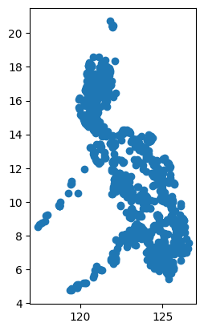
Function for creating the cluster bounding box
def create_polygon_bbox(centroid_lat, centroid_lon, distance_km):
"""Return bbox edge locations using haversine distance function
The output is specified as (west, south, east, north)
distance_km specifies the distance of each edge from the centroid
"""
centroid = (centroid_lat, centroid_lon)
top_left = inverse_haversine(
inverse_haversine(centroid, distance_km, Direction.WEST),
distance_km,
Direction.NORTH,
)
bottom_right = inverse_haversine(
inverse_haversine(centroid, distance_km, Direction.EAST),
distance_km,
Direction.SOUTH,
)
north, west = top_left
south, east = bottom_right
# check inequalities
assert west < east
assert south < north
bbox_coord_list = [west, south, east, north]
bbox = Polygon([[west, south], [east, south], [east, north], [west, north]])
return bboxcreate_polygon_bbox(10,10,10)def add_bbox_geom(cluster_centroids_gdf, distance_km, output_col='bbox'):
"""Add bbox geometry to dhs cluster data (i.e. 6th column)
Args:
cluster_centroid_gdf (gpd.GeoDataFrame): DHS data frame
length (int): buffer radius in meters
Returns:
geopandas.GeoDataFrame
"""
cluster_centroids_gdf = cluster_centroids_gdf.copy()
centroids = list(
zip(cluster_centroids_gdf["LATNUM"], cluster_centroids_gdf["LONGNUM"])
)
bbox_geometry = []
print("Adding buffer geometry...")
for centroid in tqdm(centroids):
centroid_lat, centroid_lon = centroid
bbox = create_polygon_bbox(centroid_lat, centroid_lon, distance_km)
bbox_geometry.append(bbox)
cluster_centroids_gdf[output_col] = bbox_geometry
return cluster_centroids_gdfcluster_bbox_gdf = add_bbox_geom(cluster_centroids_gdf, 2)
cluster_bbox_gdf['geometry'] = cluster_bbox_gdf['bbox']Adding buffer geometry...100%|██████████| 1214/1214 [00:00<00:00, 23675.48it/s]cluster_bbox_gdf.plot()<AxesSubplot: >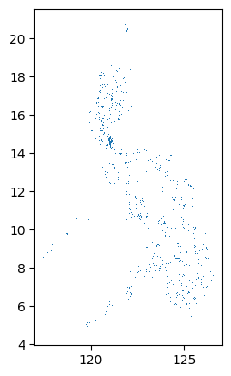
Raster zonal stats
cluster_zonal_stats_gdf = rzs.create_raster_zonal_stats(
cluster_bbox_gdf,
viirs_tif_path,
aggregation=dict(
# func=["min", "max", "mean", "median", "kurtosis", "var"],
func=["min", "max", "mean", "median", "std"],
column="avg_rad",
),
extra_args=dict(band_num=1, nodata=-999),
)cluster_zonal_stats_gdf.head()| DHSID | DHSCC | DHSYEAR | DHSCLUST | CCFIPS | ADM1FIPS | ADM1FIPSNA | ADM1SALBNA | ADM1SALBCO | ADM1DHS | ... | ALT_GPS | ALT_DEM | DATUM | geometry | bbox | avg_rad_min | avg_rad_max | avg_rad_mean | avg_rad_std | avg_rad_median | |
|---|---|---|---|---|---|---|---|---|---|---|---|---|---|---|---|---|---|---|---|---|---|
| 0 | PH201700000386 | PH | 2017.0 | 386.0 | NaN | NaN | NaN | NaN | NaN | 1.0 | ... | 9999.0 | 17.0 | WGS84 | POLYGON ((120.54560 18.25390, 120.58348 18.253... | POLYGON ((120.54560084371413 18.25390472288926... | 0.196119 | 1.391538 | 0.410263 | 0.260675 | 0.279534 |
| 1 | PH201700000387 | PH | 2017.0 | 387.0 | NaN | NaN | NaN | NaN | NaN | 1.0 | ... | 9999.0 | 10.0 | WGS84 | POLYGON ((120.54957 18.18421, 120.58744 18.184... | POLYGON ((120.54957255328522 18.18420746049634... | 0.389053 | 7.300686 | 2.008298 | 1.305749 | 1.690995 |
| 2 | PH201700000388 | PH | 2017.0 | 388.0 | NaN | NaN | NaN | NaN | NaN | 1.0 | ... | 9999.0 | 39.0 | WGS84 | POLYGON ((120.67219 18.05593, 120.71003 18.055... | POLYGON ((120.67219287500379 18.05592686509549... | 0.246468 | 0.511665 | 0.347220 | 0.056467 | 0.338678 |
| 3 | PH201700000389 | PH | 2017.0 | 389.0 | NaN | NaN | NaN | NaN | NaN | 1.0 | ... | 9999.0 | 13.0 | WGS84 | POLYGON ((120.49128 18.04303, 120.52912 18.043... | POLYGON ((120.4912846023381 18.04302918609864,... | 0.268062 | 6.462383 | 0.901461 | 1.259600 | 0.446334 |
| 4 | PH201700000390 | PH | 2017.0 | 390.0 | NaN | NaN | NaN | NaN | NaN | 1.0 | ... | 9999.0 | 126.0 | WGS84 | POLYGON ((120.64414 18.13771, 120.68200 18.137... | POLYGON ((120.64414493860735 18.13770683763467... | 0.319517 | 2.658939 | 0.610296 | 0.413121 | 0.499302 |
5 rows × 27 columns
cluster_zonal_stats_gdf.info()<class 'geopandas.geodataframe.GeoDataFrame'>
Int64Index: 1214 entries, 0 to 1249
Data columns (total 27 columns):
# Column Non-Null Count Dtype
--- ------ -------------- -----
0 DHSID 1214 non-null object
1 DHSCC 1214 non-null object
2 DHSYEAR 1214 non-null float64
3 DHSCLUST 1214 non-null float64
4 CCFIPS 0 non-null float64
5 ADM1FIPS 0 non-null float64
6 ADM1FIPSNA 0 non-null float64
7 ADM1SALBNA 0 non-null float64
8 ADM1SALBCO 0 non-null float64
9 ADM1DHS 1214 non-null float64
10 ADM1NAME 1214 non-null object
11 DHSREGCO 1214 non-null float64
12 DHSREGNA 1214 non-null object
13 SOURCE 1214 non-null object
14 URBAN_RURA 1214 non-null object
15 LATNUM 1214 non-null float64
16 LONGNUM 1214 non-null float64
17 ALT_GPS 1214 non-null float64
18 ALT_DEM 1214 non-null float64
19 DATUM 1214 non-null object
20 geometry 1214 non-null geometry
21 bbox 1214 non-null object
22 avg_rad_min 1178 non-null float64
23 avg_rad_max 1178 non-null float64
24 avg_rad_mean 1178 non-null float64
25 avg_rad_std 1178 non-null float64
26 avg_rad_median 1178 non-null float64
dtypes: float64(18), geometry(1), object(8)
memory usage: 297.9+ KBPrepare output files
output_gpkg_path = Path(viirs_config['save_path'])/'ph_2017_viirs_avg_rad_zonal_stats.gpkg'
output_csv_path = Path(viirs_config['save_path'])/'ph_2017_viirs_avg_rad_zonal_stats.csv'## GPKG
output_gdf = cluster_zonal_stats_gdf.copy()
output_gdf['latitude'] = output_gdf['LATNUM']
output_gdf['longitude'] = output_gdf['LONGNUM']
usecols = [
"DHSID",
"longitude",
"latitude",
"avg_rad_min",
"avg_rad_max",
"avg_rad_mean",
"avg_rad_std",
"avg_rad_median",
"geometry"
]
output_gdf = output_gdf[usecols]
output_gdf.to_file(output_gpkg_path, driver="GPKG")
output_gdf/home/jc_tm/project_repos/unicef-ai4d-poverty-mapping/env/lib/python3.9/site-packages/geopandas/io/file.py:362: FutureWarning: pandas.Int64Index is deprecated and will be removed from pandas in a future version. Use pandas.Index with the appropriate dtype instead.
pd.Int64Index,| DHSID | longitude | latitude | avg_rad_min | avg_rad_max | avg_rad_mean | avg_rad_std | avg_rad_median | geometry | |
|---|---|---|---|---|---|---|---|---|---|
| 0 | PH201700000386 | 120.564542 | 18.271892 | 0.196119 | 1.391538 | 0.410263 | 0.260675 | 0.279534 | POLYGON ((120.54560 18.25390, 120.58348 18.253... |
| 1 | PH201700000387 | 120.568506 | 18.202195 | 0.389053 | 7.300686 | 2.008298 | 1.305749 | 1.690995 | POLYGON ((120.54957 18.18421, 120.58744 18.184... |
| 2 | PH201700000388 | 120.691113 | 18.073914 | 0.246468 | 0.511665 | 0.347220 | 0.056467 | 0.338678 | POLYGON ((120.67219 18.05593, 120.71003 18.055... |
| 3 | PH201700000389 | 120.510203 | 18.061017 | 0.268062 | 6.462383 | 0.901461 | 1.259600 | 0.446334 | POLYGON ((120.49128 18.04303, 120.52912 18.043... |
| 4 | PH201700000390 | 120.663074 | 18.155694 | 0.319517 | 2.658939 | 0.610296 | 0.413121 | 0.499302 | POLYGON ((120.64414 18.13771, 120.68200 18.137... |
| ... | ... | ... | ... | ... | ... | ... | ... | ... | ... |
| 1245 | PH201700000722 | 122.014801 | 12.480412 | NaN | NaN | NaN | NaN | NaN | POLYGON ((121.99638 12.46243, 122.03322 12.462... |
| 1246 | PH201700000723 | 121.948492 | 12.332112 | NaN | NaN | NaN | NaN | NaN | POLYGON ((121.93008 12.31413, 121.96690 12.314... |
| 1247 | PH201700000724 | 122.082036 | 12.825163 | NaN | NaN | NaN | NaN | NaN | POLYGON ((122.06359 12.80718, 122.10048 12.807... |
| 1248 | PH201700000725 | 122.308962 | 12.506513 | NaN | NaN | NaN | NaN | NaN | POLYGON ((122.29054 12.48853, 122.32739 12.488... |
| 1249 | PH201700000726 | 122.641823 | 12.359617 | NaN | NaN | NaN | NaN | NaN | POLYGON ((122.62341 12.34163, 122.66024 12.341... |
1214 rows × 9 columns
## CSV
usecols = [
"DHSID",
"longitude",
"latitude",
"avg_rad_min",
"avg_rad_max",
"avg_rad_mean",
"avg_rad_std",
"avg_rad_median",
]
output_df = output_gdf[usecols]
output_df.to_csv(output_csv_path)
output_df| DHSID | longitude | latitude | avg_rad_min | avg_rad_max | avg_rad_mean | avg_rad_std | avg_rad_median | |
|---|---|---|---|---|---|---|---|---|
| 0 | PH201700000386 | 120.564542 | 18.271892 | 0.196119 | 1.391538 | 0.410263 | 0.260675 | 0.279534 |
| 1 | PH201700000387 | 120.568506 | 18.202195 | 0.389053 | 7.300686 | 2.008298 | 1.305749 | 1.690995 |
| 2 | PH201700000388 | 120.691113 | 18.073914 | 0.246468 | 0.511665 | 0.347220 | 0.056467 | 0.338678 |
| 3 | PH201700000389 | 120.510203 | 18.061017 | 0.268062 | 6.462383 | 0.901461 | 1.259600 | 0.446334 |
| 4 | PH201700000390 | 120.663074 | 18.155694 | 0.319517 | 2.658939 | 0.610296 | 0.413121 | 0.499302 |
| ... | ... | ... | ... | ... | ... | ... | ... | ... |
| 1245 | PH201700000722 | 122.014801 | 12.480412 | NaN | NaN | NaN | NaN | NaN |
| 1246 | PH201700000723 | 121.948492 | 12.332112 | NaN | NaN | NaN | NaN | NaN |
| 1247 | PH201700000724 | 122.082036 | 12.825163 | NaN | NaN | NaN | NaN | NaN |
| 1248 | PH201700000725 | 122.308962 | 12.506513 | NaN | NaN | NaN | NaN | NaN |
| 1249 | PH201700000726 | 122.641823 | 12.359617 | NaN | NaN | NaN | NaN | NaN |
1214 rows × 8 columns
## Upload to gcs bucket
! gsutil cp {str(output_gpkg_path)} gs://poverty-mapping/outputs/viirs_ph/
! gsutil cp {str(output_csv_path)} gs://poverty-mapping/outputs/viirs_ph/
Updates are available for some Google Cloud CLI components. To install them,
please run:
$ gcloud components update
Copying file://../data/outputs/viirs_ph/ph_2017_viirs_avg_rad_zonal_stats.gpkg [Content-Type=application/octet-stream]...
Reauthentication required.0 KiB]
Please enter your password:Caught CTRL-C (signal 2) - exitingEDA: Compare with Kahlil’s output using QGIS
kahlil_cluster_zonal_stats_gdf = gpd.read_file(
"../data/outputs/viirs_ph/rzs_dhs_viirs_ph_2017.gpkg"
)kahlil_cluster_zonal_stats_gdf.head(3)| DHSCLUST | Wealth Index | DHSID | DHSCC | DHSYEAR | CCFIPS | ADM1FIPS | ADM1FIPSNA | ADM1SALBNA | ADM1SALBCO | ... | ALT_GPS | ALT_DEM | DATUM | rzs_mean | rzs_median | rzs_stdev | rzs_min | rzs_max | rzs_variance | geometry | |
|---|---|---|---|---|---|---|---|---|---|---|---|---|---|---|---|---|---|---|---|---|---|
| 0 | 1 | -31881.608696 | PH201700000001 | PH | 2017.0 | NULL | NULL | NULL | NULL | NULL | ... | 9999.0 | 10.0 | WGS84 | 0.265912 | 0.261700 | 0.029590 | 0.222937 | 0.375542 | 0.000876 | MULTIPOLYGON (((403606.834 739871.878, 403606.... |
| 1 | 2 | -2855.375000 | PH201700000002 | PH | 2017.0 | NULL | NULL | NULL | NULL | NULL | ... | 9999.0 | 5.0 | WGS84 | 0.981981 | 0.346526 | 1.325483 | 0.224869 | 6.881082 | 1.756904 | MULTIPOLYGON (((406060.603 738497.001, 406060.... |
| 2 | 3 | -57647.047619 | PH201700000003 | PH | 2017.0 | NULL | NULL | NULL | NULL | NULL | ... | 9999.0 | 47.0 | WGS84 | 0.328983 | 0.288842 | 0.115563 | 0.224655 | 0.865518 | 0.013355 | MULTIPOLYGON (((411300.477 734017.843, 411300.... |
3 rows × 28 columns
kahlil_cluster_zonal_stats_gdf[kahlil_cluster_zonal_stats_gdf['DHSID'] == 'PH201700000020']| DHSCLUST | Wealth Index | DHSID | DHSCC | DHSYEAR | CCFIPS | ADM1FIPS | ADM1FIPSNA | ADM1SALBNA | ADM1SALBCO | ... | ALT_GPS | ALT_DEM | DATUM | rzs_mean | rzs_median | rzs_stdev | rzs_min | rzs_max | rzs_variance | geometry | |
|---|---|---|---|---|---|---|---|---|---|---|---|---|---|---|---|---|---|---|---|---|---|
| 19 | 20 | -104656.428571 | PH201700000020 | PH | 2017.0 | NULL | NULL | NULL | NULL | NULL | ... | 9999.0 | 9999.0 | WGS84 | NaN | NaN | NaN | NaN | NaN | NaN | MULTIPOLYGON (((-7272487.381 19997929.886, -72... |
1 rows × 28 columns
kahlil_cluster_zonal_stats_gdf.info()<class 'geopandas.geodataframe.GeoDataFrame'>
RangeIndex: 1249 entries, 0 to 1248
Data columns (total 28 columns):
# Column Non-Null Count Dtype
--- ------ -------------- -----
0 DHSCLUST 1249 non-null int64
1 Wealth Index 1249 non-null float64
2 DHSID 1249 non-null object
3 DHSCC 1249 non-null object
4 DHSYEAR 1249 non-null float64
5 CCFIPS 1249 non-null object
6 ADM1FIPS 1249 non-null object
7 ADM1FIPSNA 1249 non-null object
8 ADM1SALBNA 1249 non-null object
9 ADM1SALBCO 1249 non-null object
10 ADM1DHS 1249 non-null float64
11 ADM1NAME 1249 non-null object
12 DHSREGCO 1249 non-null float64
13 DHSREGNA 1249 non-null object
14 SOURCE 1249 non-null object
15 URBAN_RURA 1249 non-null object
16 LATNUM 1249 non-null float64
17 LONGNUM 1249 non-null float64
18 ALT_GPS 1249 non-null float64
19 ALT_DEM 1249 non-null float64
20 DATUM 1249 non-null object
21 rzs_mean 1213 non-null float64
22 rzs_median 1213 non-null float64
23 rzs_stdev 1213 non-null float64
24 rzs_min 1213 non-null float64
25 rzs_max 1213 non-null float64
26 rzs_variance 1213 non-null float64
27 geometry 1249 non-null geometry
dtypes: float64(14), geometry(1), int64(1), object(12)
memory usage: 273.3+ KBusecols_left = [
"DHSID",
"avg_rad_min",
"avg_rad_max",
"avg_rad_mean",
"avg_rad_std",
"avg_rad_median",
"geometry"
]
cluster_zonal_stats_gdf = cluster_zonal_stats_gdf[usecols_left]
cluster_zonal_stats_gdf.head() | DHSID | avg_rad_min | avg_rad_max | avg_rad_mean | avg_rad_std | avg_rad_median | geometry | |
|---|---|---|---|---|---|---|---|
| 0 | PH201700000386 | 0.196119 | 1.391538 | 0.410263 | 0.260675 | 0.279534 | POLYGON ((120.54560 18.25390, 120.58348 18.253... |
| 1 | PH201700000387 | 0.389053 | 7.300686 | 2.008298 | 1.305749 | 1.690995 | POLYGON ((120.54957 18.18421, 120.58744 18.184... |
| 2 | PH201700000388 | 0.246468 | 0.511665 | 0.347220 | 0.056467 | 0.338678 | POLYGON ((120.67219 18.05593, 120.71003 18.055... |
| 3 | PH201700000389 | 0.268062 | 6.462383 | 0.901461 | 1.259600 | 0.446334 | POLYGON ((120.49128 18.04303, 120.52912 18.043... |
| 4 | PH201700000390 | 0.319517 | 2.658939 | 0.610296 | 0.413121 | 0.499302 | POLYGON ((120.64414 18.13771, 120.68200 18.137... |
cluster_zonal_stats_gdf.info()<class 'geopandas.geodataframe.GeoDataFrame'>
Int64Index: 1214 entries, 0 to 1249
Data columns (total 7 columns):
# Column Non-Null Count Dtype
--- ------ -------------- -----
0 DHSID 1214 non-null object
1 avg_rad_min 1178 non-null float64
2 avg_rad_max 1178 non-null float64
3 avg_rad_mean 1178 non-null float64
4 avg_rad_std 1178 non-null float64
5 avg_rad_median 1178 non-null float64
6 geometry 1214 non-null geometry
dtypes: float64(5), geometry(1), object(1)
memory usage: 108.2+ KBusecols_right = [
"DHSID",
"rzs_min",
"rzs_max",
"rzs_mean",
"rzs_stdev",
"rzs_median",
]
kahlil_cluster_zonal_stats_gdf = kahlil_cluster_zonal_stats_gdf[usecols_right]
kahlil_cluster_zonal_stats_gdf.head()| DHSID | rzs_min | rzs_max | rzs_mean | rzs_stdev | rzs_median | |
|---|---|---|---|---|---|---|
| 0 | PH201700000001 | 0.222937 | 0.375542 | 0.265912 | 0.029590 | 0.261700 |
| 1 | PH201700000002 | 0.224869 | 6.881082 | 0.981981 | 1.325483 | 0.346526 |
| 2 | PH201700000003 | 0.224655 | 0.865518 | 0.328983 | 0.115563 | 0.288842 |
| 3 | PH201700000004 | 0.184109 | 0.341882 | 0.230732 | 0.022960 | 0.226286 |
| 4 | PH201700000005 | NaN | NaN | NaN | NaN | NaN |
kahlil_cluster_zonal_stats_gdf.info()<class 'pandas.core.frame.DataFrame'>
RangeIndex: 1249 entries, 0 to 1248
Data columns (total 6 columns):
# Column Non-Null Count Dtype
--- ------ -------------- -----
0 DHSID 1249 non-null object
1 rzs_min 1213 non-null float64
2 rzs_max 1213 non-null float64
3 rzs_mean 1213 non-null float64
4 rzs_stdev 1213 non-null float64
5 rzs_median 1213 non-null float64
dtypes: float64(5), object(1)
memory usage: 58.7+ KB# Merge
cluster_zonal_stats_gdf['DHSID'] = cluster_zonal_stats_gdf['DHSID'].astype(str)
kahlil_cluster_zonal_stats_gdf['DHSID'] = kahlil_cluster_zonal_stats_gdf['DHSID'].astype(str)
combined_zonal_stats = cluster_zonal_stats_gdf.merge(kahlil_cluster_zonal_stats_gdf, on=["DHSID"], how="outer")
combined_zonal_stats.head()| DHSID | avg_rad_min | avg_rad_max | avg_rad_mean | avg_rad_std | avg_rad_median | geometry | rzs_min | rzs_max | rzs_mean | rzs_stdev | rzs_median | |
|---|---|---|---|---|---|---|---|---|---|---|---|---|
| 0 | PH201700000386 | 0.196119 | 1.391538 | 0.410263 | 0.260675 | 0.279534 | POLYGON ((120.54560 18.25390, 120.58348 18.253... | 0.196119 | 1.391538 | 0.405251 | 0.259855 | 0.275098 |
| 1 | PH201700000387 | 0.389053 | 7.300686 | 2.008298 | 1.305749 | 1.690995 | POLYGON ((120.54957 18.18421, 120.58744 18.184... | 0.389053 | 8.644136 | 2.131632 | 1.524006 | 1.712358 |
| 2 | PH201700000388 | 0.246468 | 0.511665 | 0.347220 | 0.056467 | 0.338678 | POLYGON ((120.67219 18.05593, 120.71003 18.055... | 0.246468 | 0.511665 | 0.347220 | 0.056467 | 0.338678 |
| 3 | PH201700000389 | 0.268062 | 6.462383 | 0.901461 | 1.259600 | 0.446334 | POLYGON ((120.49128 18.04303, 120.52912 18.043... | 0.268062 | 6.462383 | 0.872115 | 1.223619 | 0.415388 |
| 4 | PH201700000390 | 0.319517 | 2.658939 | 0.610296 | 0.413121 | 0.499302 | POLYGON ((120.64414 18.13771, 120.68200 18.137... | 0.318214 | 2.658939 | 0.603239 | 0.409725 | 0.483755 |
zonal_stat_pairs = list(zip(usecols_left,usecols_right))[1:]
zonal_stat_pairs[('avg_rad_min', 'rzs_min'),
('avg_rad_max', 'rzs_max'),
('avg_rad_mean', 'rzs_mean'),
('avg_rad_std', 'rzs_stdev'),
('avg_rad_median', 'rzs_median')]for pair in zonal_stat_pairs:
usecols = ["DHSID"] + list(pair)
print(usecols)
df = combined_zonal_stats[usecols].dropna(how="any").copy()
df["abs_diff"] = np.abs(df[pair[0]].sub(df[pair[1]]))
df["avg"] = (df[pair[0]] + df[pair[1]]) / 2
df["pct_diff"] = (df["abs_diff"] / df['avg']) * 100
display(df.sort_values(by="pct_diff", ascending=False))
display(df.info())
display(df[df['abs_diff']==0])
fig, ax = plt.subplots(figsize=(6, 4))
colors = ["lightblue", "salmon"]
for i, stat in enumerate(pair):
facecolor = colorConverter.to_rgba(colors[i], alpha=0.1)
edgecolor = colors[i]
df[stat].hist(
ax=ax,
label=stat,
facecolor=facecolor,
edgecolor=edgecolor,
bins=np.arange(0, np.max(df[stat]), 2),
)
fig.legend()
fig.suptitle(f"{pair[0]} vs {pair[1]}")
plt.tight_layout()
plt.show()
df.dropna(how="any").boxplot("pct_diff")
plt.show()['DHSID', 'avg_rad_min', 'rzs_min']| DHSID | avg_rad_min | rzs_min | abs_diff | avg | pct_diff | |
|---|---|---|---|---|---|---|
| 927 | PH201700000326 | 0.165500 | 20.654139 | 20.488639 | 10.409819 | 196.820315 |
| 926 | PH201700000325 | 0.223607 | 20.654139 | 20.430531 | 10.438873 | 195.715872 |
| 936 | PH201700000335 | 0.167861 | 14.963068 | 14.795207 | 7.565465 | 195.562430 |
| 934 | PH201700000333 | 0.176862 | 15.516428 | 15.339566 | 7.846645 | 195.492042 |
| 822 | PH201700001250 | 15.841383 | 0.196275 | 15.645108 | 8.018829 | 195.104650 |
| ... | ... | ... | ... | ... | ... | ... |
| 9 | PH201700000395 | 0.280226 | 0.280226 | 0.000000 | 0.280226 | 0.000000 |
| 10 | PH201700000396 | 0.161995 | 0.161995 | 0.000000 | 0.161995 | 0.000000 |
| 11 | PH201700000397 | 0.346775 | 0.346775 | 0.000000 | 0.346775 | 0.000000 |
| 15 | PH201700000401 | 0.409413 | 0.409413 | 0.000000 | 0.409413 | 0.000000 |
| 0 | PH201700000386 | 0.196119 | 0.196119 | 0.000000 | 0.196119 | 0.000000 |
1177 rows × 6 columns
<class 'pandas.core.frame.DataFrame'>
Int64Index: 1177 entries, 0 to 1177
Data columns (total 6 columns):
# Column Non-Null Count Dtype
--- ------ -------------- -----
0 DHSID 1177 non-null object
1 avg_rad_min 1177 non-null float64
2 rzs_min 1177 non-null float64
3 abs_diff 1177 non-null float64
4 avg 1177 non-null float64
5 pct_diff 1177 non-null float64
dtypes: float64(5), object(1)
memory usage: 64.4+ KBNone| DHSID | avg_rad_min | rzs_min | abs_diff | avg | pct_diff | |
|---|---|---|---|---|---|---|
| 0 | PH201700000386 | 0.196119 | 0.196119 | 0.0 | 0.196119 | 0.0 |
| 1 | PH201700000387 | 0.389053 | 0.389053 | 0.0 | 0.389053 | 0.0 |
| 2 | PH201700000388 | 0.246468 | 0.246468 | 0.0 | 0.246468 | 0.0 |
| 3 | PH201700000389 | 0.268062 | 0.268062 | 0.0 | 0.268062 | 0.0 |
| 5 | PH201700000391 | 0.193072 | 0.193072 | 0.0 | 0.193072 | 0.0 |
| 6 | PH201700000392 | 0.291583 | 0.291583 | 0.0 | 0.291583 | 0.0 |
| 7 | PH201700000393 | 0.196885 | 0.196885 | 0.0 | 0.196885 | 0.0 |
| 8 | PH201700000394 | 0.246468 | 0.246468 | 0.0 | 0.246468 | 0.0 |
| 9 | PH201700000395 | 0.280226 | 0.280226 | 0.0 | 0.280226 | 0.0 |
| 10 | PH201700000396 | 0.161995 | 0.161995 | 0.0 | 0.161995 | 0.0 |
| 11 | PH201700000397 | 0.346775 | 0.346775 | 0.0 | 0.346775 | 0.0 |
| 13 | PH201700000399 | 0.199084 | 0.199084 | 0.0 | 0.199084 | 0.0 |
| 14 | PH201700000400 | 0.198065 | 0.198065 | 0.0 | 0.198065 | 0.0 |
| 15 | PH201700000401 | 0.409413 | 0.409413 | 0.0 | 0.409413 | 0.0 |
| 16 | PH201700000402 | 0.242476 | 0.242476 | 0.0 | 0.242476 | 0.0 |
| 17 | PH201700000403 | 0.211108 | 0.211108 | 0.0 | 0.211108 | 0.0 |
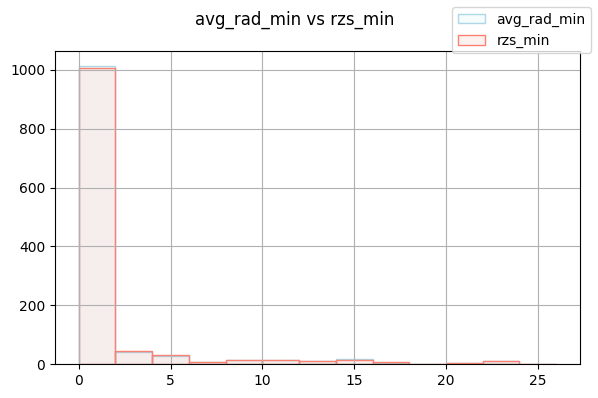
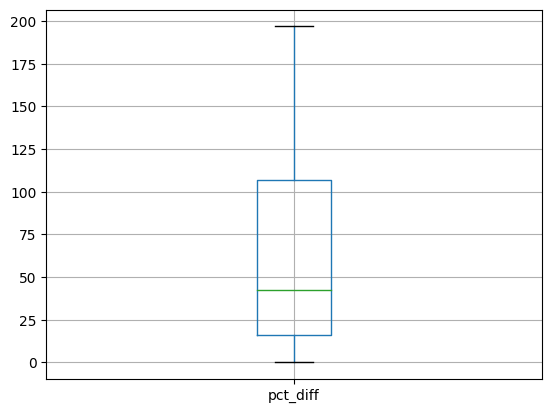
['DHSID', 'avg_rad_max', 'rzs_max']| DHSID | avg_rad_max | rzs_max | abs_diff | avg | pct_diff | |
|---|---|---|---|---|---|---|
| 934 | PH201700000333 | 0.235426 | 104.334267 | 104.098841 | 52.284846 | 199.099449 |
| 936 | PH201700000335 | 0.242813 | 80.001572 | 79.758759 | 40.122192 | 198.789632 |
| 937 | PH201700000336 | 0.256106 | 80.001572 | 79.745466 | 40.128839 | 198.723581 |
| 935 | PH201700000334 | 0.282405 | 80.001572 | 79.719167 | 40.141988 | 198.592972 |
| 933 | PH201700000332 | 0.283060 | 80.001572 | 79.718512 | 40.142316 | 198.589719 |
| ... | ... | ... | ... | ... | ... | ... |
| 15 | PH201700000401 | 7.289020 | 7.289020 | 0.000000 | 7.289020 | 0.000000 |
| 16 | PH201700000402 | 0.593529 | 0.593529 | 0.000000 | 0.593529 | 0.000000 |
| 194 | PH201700000584 | 3.201763 | 3.201763 | 0.000000 | 3.201763 | 0.000000 |
| 152 | PH201700000542 | 28.368755 | 28.368755 | 0.000000 | 28.368755 | 0.000000 |
| 0 | PH201700000386 | 1.391538 | 1.391538 | 0.000000 | 1.391538 | 0.000000 |
1177 rows × 6 columns
<class 'pandas.core.frame.DataFrame'>
Int64Index: 1177 entries, 0 to 1177
Data columns (total 6 columns):
# Column Non-Null Count Dtype
--- ------ -------------- -----
0 DHSID 1177 non-null object
1 avg_rad_max 1177 non-null float64
2 rzs_max 1177 non-null float64
3 abs_diff 1177 non-null float64
4 avg 1177 non-null float64
5 pct_diff 1177 non-null float64
dtypes: float64(5), object(1)
memory usage: 64.4+ KBNone| DHSID | avg_rad_max | rzs_max | abs_diff | avg | pct_diff | |
|---|---|---|---|---|---|---|
| 0 | PH201700000386 | 1.391538 | 1.391538 | 0.0 | 1.391538 | 0.0 |
| 2 | PH201700000388 | 0.511665 | 0.511665 | 0.0 | 0.511665 | 0.0 |
| 3 | PH201700000389 | 6.462383 | 6.462383 | 0.0 | 6.462383 | 0.0 |
| 4 | PH201700000390 | 2.658939 | 2.658939 | 0.0 | 2.658939 | 0.0 |
| 5 | PH201700000391 | 0.368501 | 0.368501 | 0.0 | 0.368501 | 0.0 |
| 6 | PH201700000392 | 14.821279 | 14.821279 | 0.0 | 14.821279 | 0.0 |
| 7 | PH201700000393 | 0.592741 | 0.592741 | 0.0 | 0.592741 | 0.0 |
| 8 | PH201700000394 | 0.511665 | 0.511665 | 0.0 | 0.511665 | 0.0 |
| 9 | PH201700000395 | 4.128791 | 4.128791 | 0.0 | 4.128791 | 0.0 |
| 10 | PH201700000396 | 0.797952 | 0.797952 | 0.0 | 0.797952 | 0.0 |
| 11 | PH201700000397 | 14.821279 | 14.821279 | 0.0 | 14.821279 | 0.0 |
| 12 | PH201700000398 | 9.056686 | 9.056686 | 0.0 | 9.056686 | 0.0 |
| 13 | PH201700000399 | 0.454071 | 0.454071 | 0.0 | 0.454071 | 0.0 |
| 14 | PH201700000400 | 0.308333 | 0.308333 | 0.0 | 0.308333 | 0.0 |
| 15 | PH201700000401 | 7.289020 | 7.289020 | 0.0 | 7.289020 | 0.0 |
| 16 | PH201700000402 | 0.593529 | 0.593529 | 0.0 | 0.593529 | 0.0 |
| 51 | PH201700000440 | 2.235905 | 2.235905 | 0.0 | 2.235905 | 0.0 |
| 152 | PH201700000542 | 28.368755 | 28.368755 | 0.0 | 28.368755 | 0.0 |
| 194 | PH201700000584 | 3.201763 | 3.201763 | 0.0 | 3.201763 | 0.0 |
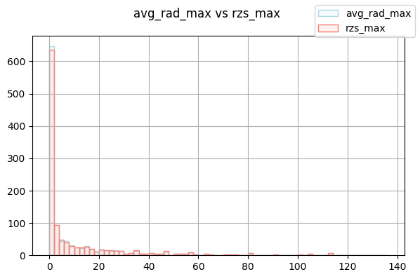
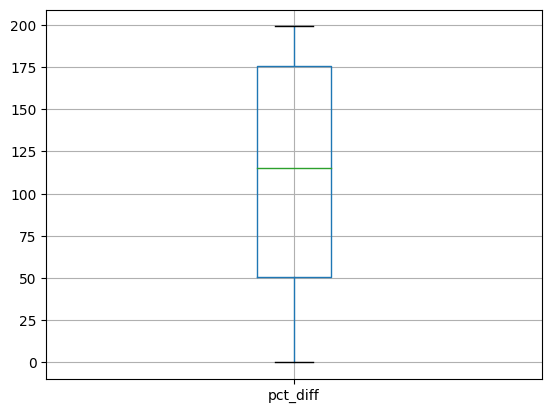
['DHSID', 'avg_rad_mean', 'rzs_mean']| DHSID | avg_rad_mean | rzs_mean | abs_diff | avg | pct_diff | |
|---|---|---|---|---|---|---|
| 934 | PH201700000333 | 0.208300 | 37.934890 | 3.772659e+01 | 19.071595 | 1.978156e+02 |
| 931 | PH201700000330 | 0.239898 | 39.595623 | 3.935573e+01 | 19.917761 | 1.975911e+02 |
| 822 | PH201700001250 | 37.225815 | 0.241771 | 3.698404e+01 | 18.733793 | 1.974189e+02 |
| 927 | PH201700000326 | 0.203769 | 31.056626 | 3.085286e+01 | 15.630197 | 1.973926e+02 |
| 936 | PH201700000335 | 0.207031 | 29.402678 | 2.919565e+01 | 14.804854 | 1.972032e+02 |
| ... | ... | ... | ... | ... | ... | ... |
| 2 | PH201700000388 | 0.347220 | 0.347220 | 6.806703e-09 | 0.347220 | 1.960341e-06 |
| 6 | PH201700000392 | 2.197849 | 2.197849 | 3.973643e-08 | 2.197849 | 1.807969e-06 |
| 13 | PH201700000399 | 0.289558 | 0.289558 | 4.139211e-09 | 0.289558 | 1.429492e-06 |
| 16 | PH201700000402 | 0.368128 | 0.368128 | 4.415159e-09 | 0.368128 | 1.199355e-06 |
| 9 | PH201700000395 | 1.339914 | 1.339914 | 8.094458e-09 | 1.339914 | 6.041026e-07 |
1177 rows × 6 columns
<class 'pandas.core.frame.DataFrame'>
Int64Index: 1177 entries, 0 to 1177
Data columns (total 6 columns):
# Column Non-Null Count Dtype
--- ------ -------------- -----
0 DHSID 1177 non-null object
1 avg_rad_mean 1177 non-null float64
2 rzs_mean 1177 non-null float64
3 abs_diff 1177 non-null float64
4 avg 1177 non-null float64
5 pct_diff 1177 non-null float64
dtypes: float64(5), object(1)
memory usage: 64.4+ KBNone| DHSID | avg_rad_mean | rzs_mean | abs_diff | avg | pct_diff |
|---|
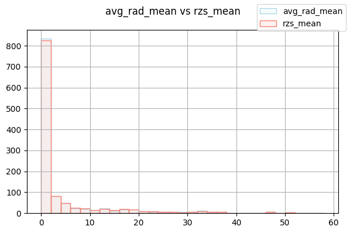
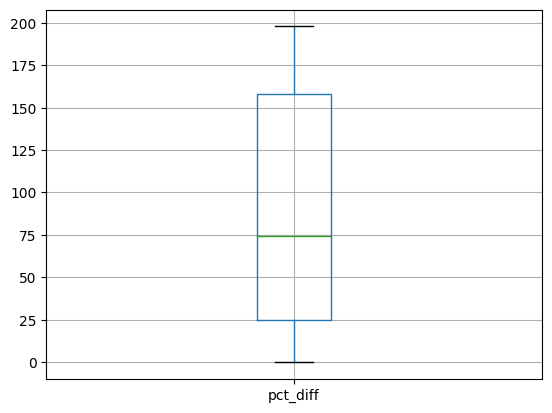
['DHSID', 'avg_rad_std', 'rzs_stdev']| DHSID | avg_rad_std | rzs_stdev | abs_diff | avg | pct_diff | |
|---|---|---|---|---|---|---|
| 934 | PH201700000333 | 0.010745 | 21.045409 | 2.103466e+01 | 10.528077 | 1.997959e+02 |
| 822 | PH201700001250 | 16.332844 | 0.018257 | 1.631459e+01 | 8.175550 | 1.995534e+02 |
| 937 | PH201700000336 | 0.014798 | 12.150881 | 1.213608e+01 | 6.082840 | 1.995134e+02 |
| 706 | PH201700001135 | 13.676804 | 0.018170 | 1.365863e+01 | 6.847487 | 1.994693e+02 |
| 935 | PH201700000334 | 0.017697 | 12.977068 | 1.295937e+01 | 6.497382 | 1.994553e+02 |
| ... | ... | ... | ... | ... | ... | ... |
| 11 | PH201700000397 | 2.692361 | 2.692361 | 6.661338e-15 | 2.692361 | 2.474162e-13 |
| 13 | PH201700000399 | 0.060621 | 0.060621 | 1.457168e-16 | 0.060621 | 2.403751e-13 |
| 16 | PH201700000402 | 0.072370 | 0.072370 | 1.526557e-16 | 0.072370 | 2.109373e-13 |
| 6 | PH201700000392 | 2.795605 | 2.795605 | 0.000000e+00 | 2.795605 | 0.000000e+00 |
| 9 | PH201700000395 | 0.859464 | 0.859464 | 0.000000e+00 | 0.859464 | 0.000000e+00 |
1177 rows × 6 columns
<class 'pandas.core.frame.DataFrame'>
Int64Index: 1177 entries, 0 to 1177
Data columns (total 6 columns):
# Column Non-Null Count Dtype
--- ------ -------------- -----
0 DHSID 1177 non-null object
1 avg_rad_std 1177 non-null float64
2 rzs_stdev 1177 non-null float64
3 abs_diff 1177 non-null float64
4 avg 1177 non-null float64
5 pct_diff 1177 non-null float64
dtypes: float64(5), object(1)
memory usage: 64.4+ KBNone| DHSID | avg_rad_std | rzs_stdev | abs_diff | avg | pct_diff | |
|---|---|---|---|---|---|---|
| 6 | PH201700000392 | 2.795605 | 2.795605 | 0.0 | 2.795605 | 0.0 |
| 9 | PH201700000395 | 0.859464 | 0.859464 | 0.0 | 0.859464 | 0.0 |
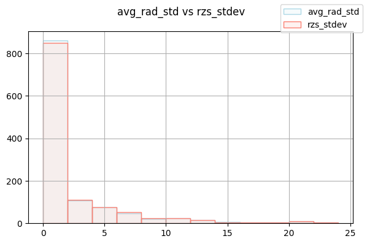
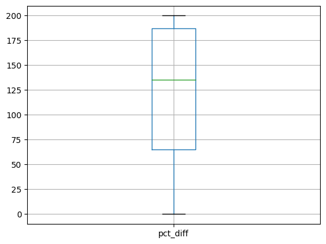
['DHSID', 'avg_rad_median', 'rzs_median']| DHSID | avg_rad_median | rzs_median | abs_diff | avg | pct_diff | |
|---|---|---|---|---|---|---|
| 934 | PH201700000333 | 0.208723 | 31.935932 | 31.727209 | 16.072328 | 197.402705 |
| 425 | PH201700000378 | 37.072456 | 0.242767 | 36.829689 | 18.657612 | 197.397661 |
| 931 | PH201700000330 | 0.225248 | 33.502945 | 33.277697 | 16.864096 | 197.328668 |
| 929 | PH201700000328 | 0.235627 | 35.018345 | 34.782718 | 17.626986 | 197.326523 |
| 927 | PH201700000326 | 0.199338 | 29.279701 | 29.080363 | 14.739520 | 197.295185 |
| ... | ... | ... | ... | ... | ... | ... |
| 9 | PH201700000395 | 1.121043 | 1.121043 | 0.000000 | 1.121043 | 0.000000 |
| 5 | PH201700000391 | 0.226768 | 0.226768 | 0.000000 | 0.226768 | 0.000000 |
| 2 | PH201700000388 | 0.338678 | 0.338678 | 0.000000 | 0.338678 | 0.000000 |
| 16 | PH201700000402 | 0.372673 | 0.372673 | 0.000000 | 0.372673 | 0.000000 |
| 11 | PH201700000397 | 0.919298 | 0.919298 | 0.000000 | 0.919298 | 0.000000 |
1177 rows × 6 columns
<class 'pandas.core.frame.DataFrame'>
Int64Index: 1177 entries, 0 to 1177
Data columns (total 6 columns):
# Column Non-Null Count Dtype
--- ------ -------------- -----
0 DHSID 1177 non-null object
1 avg_rad_median 1177 non-null float64
2 rzs_median 1177 non-null float64
3 abs_diff 1177 non-null float64
4 avg 1177 non-null float64
5 pct_diff 1177 non-null float64
dtypes: float64(5), object(1)
memory usage: 64.4+ KBNone| DHSID | avg_rad_median | rzs_median | abs_diff | avg | pct_diff | |
|---|---|---|---|---|---|---|
| 2 | PH201700000388 | 0.338678 | 0.338678 | 0.0 | 0.338678 | 0.0 |
| 5 | PH201700000391 | 0.226768 | 0.226768 | 0.0 | 0.226768 | 0.0 |
| 8 | PH201700000394 | 0.332365 | 0.332365 | 0.0 | 0.332365 | 0.0 |
| 9 | PH201700000395 | 1.121043 | 1.121043 | 0.0 | 1.121043 | 0.0 |
| 11 | PH201700000397 | 0.919298 | 0.919298 | 0.0 | 0.919298 | 0.0 |
| 16 | PH201700000402 | 0.372673 | 0.372673 | 0.0 | 0.372673 | 0.0 |
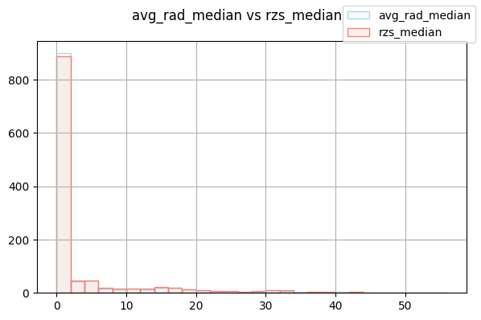
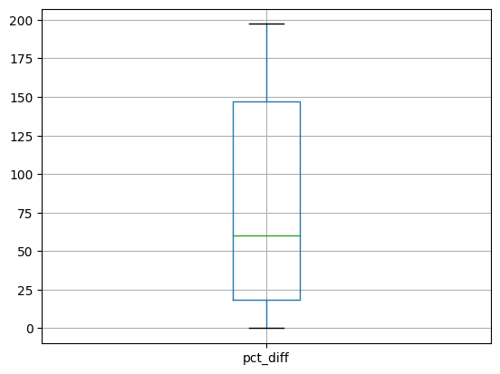